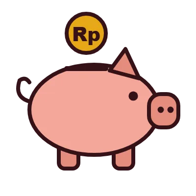
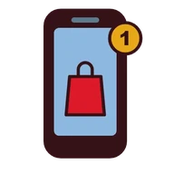
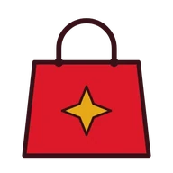
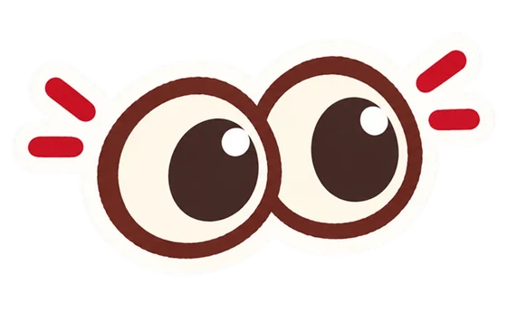
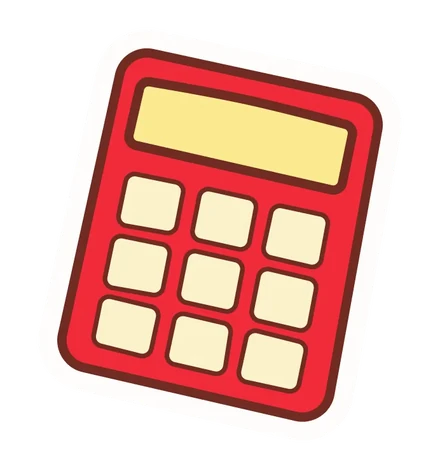

Ada jeda sebelum kamu menyesal. Masuk ke Hold Up dan kenali momen itu, sebelum tombol beli mengambil alih keputusanmu.
Kenali kebiasaanmu, pahami datanya, dan ambil jeda sebelum menyesal.
Tahukah Kamu?

Indeks literasi keuangan Gen Z termuda (15–17 tahun), padahal 89,13% sudah memakai layanan keuangan1

Rekening paylater di perbankan per Juli 2026, utangnya tumbuh 31% dalam setahun2
kecantikan,
gadget
Tiga kategori yang paling mendominasi belanja online 2024, bukan kebutuhan pokok3

Gen Z Indonesia sudah memakai internet, di atas rata-rata nasional 80,66%4
Sumber: 1OJK, SNLIK 2026 2OJK, RDKB 2026 3Jurnal PIKMA 4APJII 2025
Kenapa Gen Z Rentan?
"Generasi terbesar, tumbuh bareng internet, toko cuma sejauh jempol"
Ada 75,49 juta Gen Z di Indonesia, dan hampir 9 dari 10 sudah online. Promo, live shopping, dan tombol checkout ikut masuk ke layar setiap hari.
Yang ini berarti untukmu: Karena belanja cuma sejauh jempol, jedanya juga harus ada di situ: sebelum checkout.
"Sudah bisa bayar sendiri, tapi pemahamannya belum menyusul"
Di kelompok usia Gen Z, yang memakai produk keuangan selalu lebih banyak daripada yang benar-benar paham produknya.
Yang ini berarti untukmu: Kamu butuh jeda yang muncul di titik paling rawan, bukan sekadar edukasi finansial biasa.
Mulai sekarang
Nggak perlu install apa-apa. Ada jeda sebelum kamu menyesal, dan itu bisa dimulai dari sini.

